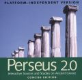
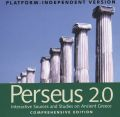
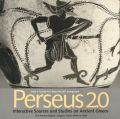

|
|
Yale University Press Search Results
|
|
5 matching titles found.
| |

|
Perseus 2.0: Interactive Sources and Studies on Ancient Greece
Platform-Independent Version, Comprehensive Edition
March 2000, Multimedia $375.00
ISBN: 0300080921
| | add to cart | |

|
Perseus 2.0: Interactive Sources and Studies on Ancient Greece
Platform-Independent Version, Concise Edition
March 2000, Multimedia $160.00
ISBN: 0300080913
| | add to cart | |

|
Perseus 2.0:Interactive Sources and Studies on Ancient Greece
Concise Edition for Macintosh computers
November 1996, Multimedia $160.00
ISBN: 0300059396
| | add to cart | |
|
Perseus 2.0: Interactive Sources and Studies on Ancient Greece
Comprehensive Edition for Macintosh computers
September 1996, Multimedia $370.00
ISBN: 0300059361
| | add to cart | |

|
Perseus 2.0: Interactive Sources and Studies on Ancient Greece
User`s Guide for Macintosh computers
September 1996, Multimedia $32.00
ISBN: 0300059353
| | add to cart |
|